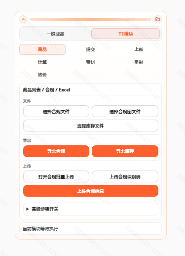
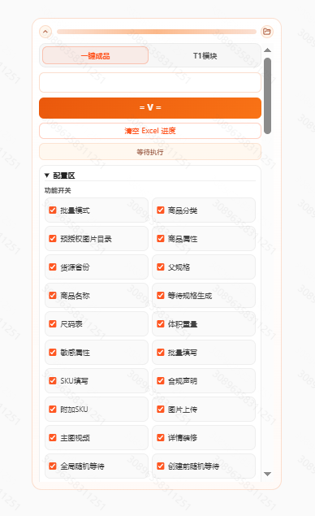
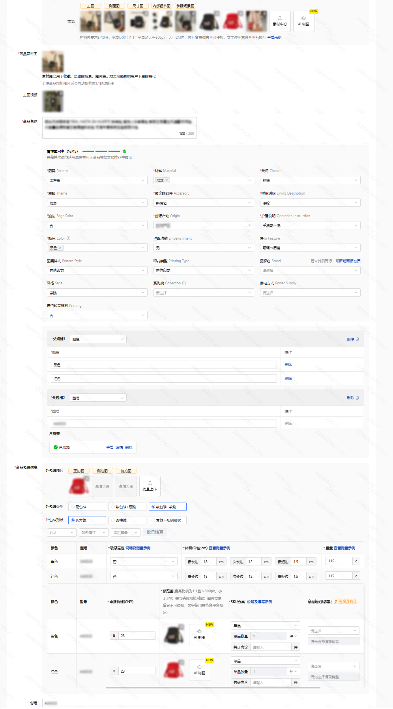
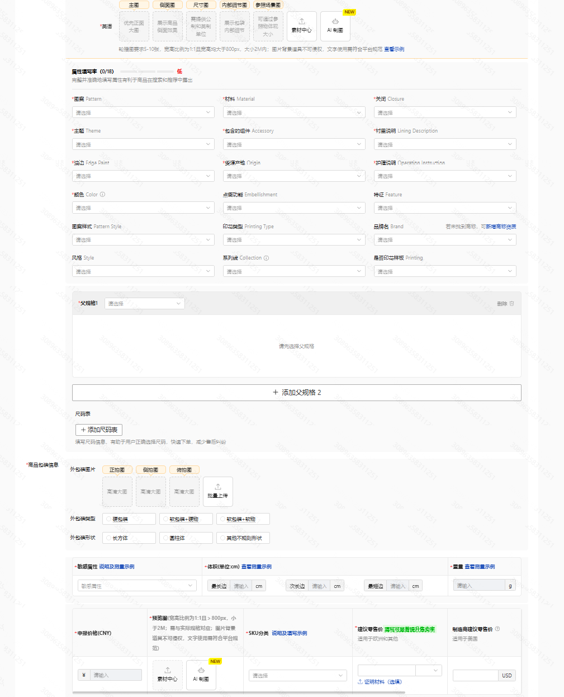
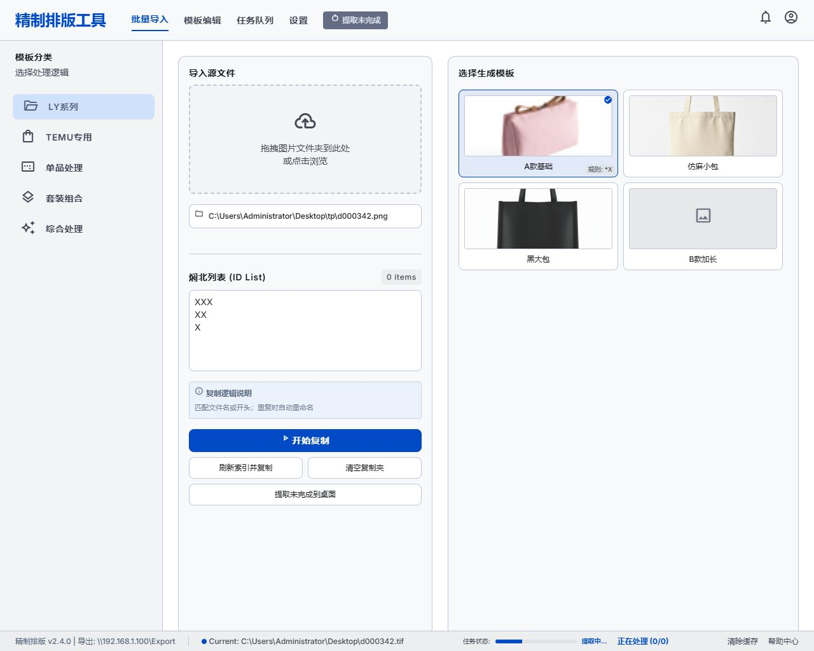

业务背景
商品上架需要反复读取资料、复制字段、上传图片、填写属性、提交审核和核对状态。人工一直点，不仅慢，也容易因为字段多、页面多产生漏填和错填。
E-commerce Auto Listing
这个项目的核心不是“做一个按钮”，而是把商品上架前后的资料整理、字段维护、表单录入、状态复核和异常处理拆成稳定流程，再用 Excel 数据和自动化脚本承接重复执行部分。





业务背景
商品上架需要反复读取资料、复制字段、上传图片、填写属性、提交审核和核对状态。人工一直点，不仅慢，也容易因为字段多、页面多产生漏填和错填。
流程拆解
先把上架动作拆成数据准备、字段映射、页面填写、提交动作、状态回查和异常标记，再判断哪些适合脚本执行，哪些必须保留人工复核。
执行方式
以 Excel 作为数据入口，读取商品标题、分类、价格、图片、属性等字段，通过自动化流程模拟人工填写，并加入随机间隔和状态记录。
产出价值
把持续操作压缩为数据维护和异常检查，减少重复点击时间，让上架工作更可复盘、可追踪，也方便后续继续扩展字段和规则。
Workflow Detail 流程细节
用表格统一维护商品基础信息，减少页面之间来回复制，把字段来源固定下来。
把可重复点击、填写、提交的动作交给脚本执行，保留人工对关键字段和异常结果的判断。
记录执行状态、失败原因和待复核项，避免工具跑完后不知道哪些商品需要重新处理。
后续可以继续加入分类规则、图片检查、价格校验和多平台差异字段。